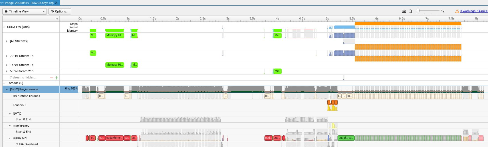
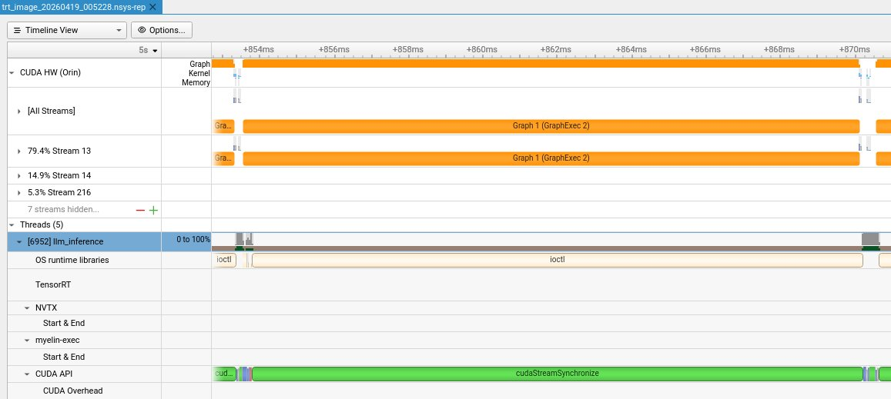
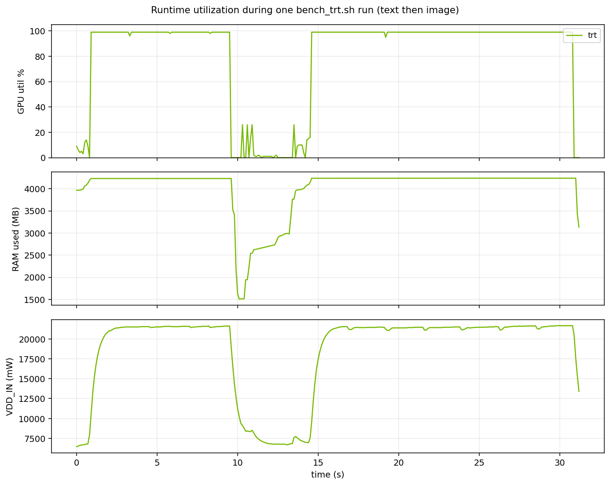

Three runtimes, one 8 GB budget: a VLM on Jetson Orin Nano
I benchmarked Cosmos-Reason2-2B, NVIDIA's physical-AI VLM, across three inference runtimes on a Jetson Orin Nano 8 GB: llama.cpp, vLLM, and TensorRT Edge-LLM. Same model, same quantization class, same hardware. llama.cpp worked out of the box. vLLM needed a community-quantized W4A16 checkpoint and a vision-encoder profile cap to fit under the Orin Nano's contiguous-allocation ceiling. TRT Edge-LLM took the most work: a kernel-level CMA parameter plus an ONNX graph rewrite to split the LM head MatMul. As far as I can tell this is the first public report of Cosmos-Reason2-2B running on TRT Edge-LLM on an Orin Nano — NVIDIA's own supported matrix pairs this combination with Thor, not Orin.
Final numbers: TRT Edge-LLM 60 TPS, vLLM 56 TPS, llama.cpp 38 TPS on Cosmos-Reason2-2B at W4A16 / Q4_K_M. TRT wins decode throughput and uses the least memory (4.3 GB peak vs vLLM's 6.9 GB). vLLM wins image first-token latency when warm (75 ms vs TRT's 420 ms). llama.cpp wins context length (4096 vs 1024) and has a cleaner startup story.
Code: github.com/hokwangchoi/jetson-orin-nano-benchmarks
To make the capability concrete before any numbers — here's Cosmos-Reason2-2B running through TRT Edge-LLM on the Orin Nano, looking at a driver-POV scene and answering a direct operational question.
Prompt: "I am driving this car and moving forward fast. Describe the scene and tell me what action I should take next."
1. Why this comparison
VLMs are showing up in robotics and autonomous-vehicle stacks as the "brain" that turns a scene into grounded reasoning. The interesting models are small now — 2B to 4B parameters, multimodal, post-trained for physical reasoning. The interesting hardware is cheap edge silicon — Jetson Orin Nano is $250, 8 GB unified memory, 67 TOPS.
I wanted to know what the actual cost of moving one of these models onto one of these boards looks like in 2026. Not TOPS-on-paper, not Hopper numbers — just: set up the hardware, pick a model, run it, measure.
2. The hardware budget
| Device | Jetson Orin Nano 8 GB Developer Kit (Super) |
| GPU | Ampere, SM 8.7, 1024 CUDA cores + 32 tensor cores |
| Memory | 8 GB LPDDR5 unified @ 68 GB/s (CPU + GPU share) |
| AI performance | 67 TOPS in MAXN_SUPER mode |
| JetPack (start) | 6.2.1 (L4T 36.4.7) |
| JetPack (end) | 6.2.2 (L4T 36.5) — upgraded mid-project, see §7 |
8 GB of unified memory is the hard constraint. Your weights, your KV cache, your vision encoder activations, and the Linux desktop all share the same physical DRAM. Every byte matters.
3. The model: Cosmos-Reason2-2B
NVIDIA's Cosmos-Reason2-2B is a Qwen3-VL-2B architecture post-trained with SFT and RL on embodied-reasoning datasets. It's the right size for an 8 GB board when quantized, and it outputs chain-of-thought in an explicit <think>...</think><answer>...</answer> format which makes evaluation tractable.
It's also the model NVIDIA's own VLM tutorials point at for Jetson. The 2B variant is the one that fits; the 8B is for AGX Thor and above.
4. The original plan
Three C++-native runtimes on the same model, same hardware, same prompts.
| Runtime | Role | Quantization |
|---|---|---|
| llama.cpp | Generic, hackable, hand-tuned ggml-cuda kernels | Q4_K_M GGUF (on-device) |
| vLLM | Production serving, PagedAttention, PyTorch-backed | BF16 initially, then W4A16 AWQ |
| TRT Edge-LLM | NVIDIA's C++ runtime for embedded automotive/robotics | W4A16 AWQ (host-side) |
The focus is "what's it like to deploy a production runtime on an edge platform in 2026."
5. llama.cpp: worked out of the box
llama.cpp uses raw cudaMalloc in small chunks as layers execute. No per-device compilation, no large contiguous scratch buffers. It ran first try on 6.2.2 with the NVIDIA llama.cpp container.
llama.cpp: setup
Concrete setup:
# On the Jetson, via NVIDIA's official llama.cpp container
# Model: robertzty/Cosmos-Reason2-2B-GGUF (BF16 split + mmproj)
# Merge splits, quantize BF16 → Q4_K_M (~1.1 GB)
sudo docker run --rm --runtime=nvidia --network host \
-v ~/models/cosmos-reason2-2b:/models:ro \
ghcr.io/nvidia-ai-iot/llama_cpp:latest-jetson-orin \
llama-server \
--model /models/Cosmos-Reason2-2B-Q4_K_M.gguf \
--mmproj /models/mmproj-Cosmos-Reason2-2B-BF16.gguf \
--ctx-size 4096 \
--n-gpu-layers 99 \
--parallel 1 \
--flash-attn on \
--jinja
Headless boot, sudo nvpmodel -m 2 && sudo jetson_clocks for MAXN_SUPER, 11 GB swap as a safety net. Serving on port 8000 in ~8 seconds from cold start (mmap-friendly GGUF).
llama.cpp: numbers
| Workload | TTFT (ms) | TPOT (ms) | TPS |
|---|---|---|---|
| Text, 100-token prompt → 128 tokens | 33 | 26 | 38 |
| Text + image (384×384) → 64 tokens | 114 | 27 | 35 |
Numbers are the median of 5 runs after 2 warmup passes, pristine boot, MAXN_SUPER, text-mode boot (no GUI), swap disabled for clean measurement. TTFT for the image case is ~80 ms more than text — that's the ViT vision-encoder pass. TPOT is essentially identical between the two modes, which matches theory: once you're in the decode loop, the image tokens are just more prefix in the KV cache. First image request after boot takes ~2.3 s for TTFT as llama.cpp lazily compiles the vision encoder; the 114 ms figure is post-warmup steady state.
Concurrency sweep
llama.cpp's --parallel N slot pool shares a single model instance across N concurrent requests. I swept 1, 2, 4:
| --parallel | Mean TTFT (ms) | Mean TPOT (ms) | Aggregate TPS |
|---|---|---|---|
| 1 | 58 | 27 | 38 |
| 2 | 115 | 29 | 70 |
| 4 | 231 | 34 | 59 |
TTFT scales roughly linearly with parallelism (expected — prefills serialize through the attention kernels). TPOT degrades gracefully up to 2-way. 4-way is already memory-bandwidth-starved; aggregate TPS doesn't improve over 2-way for this model on this hardware.
6. TRT Edge-LLM: hitting the contiguous-allocation ceiling
TRT Edge-LLM is NVIDIA's C++-native inference runtime for embedded platforms. The workflow:
Host-side quantize and ONNX export ran fine on an A40 pod. Runtime build on the Jetson took ~40 minutes but succeeded. Engine build is where things ran into a wall:
[INFO] Timing Runner: {ForeignNode[/Unsqueeze.../Cast]} (Myelin[0x80000023])
[INFO] MemUsageChange: CPU 2380 MB, GPU 3710 MB
NvMapMemAllocInternalTagged: 1075072515 error 12 (12 retries)
[ERROR] CUDA error 2 for 622329856-byte allocation
[ERROR] Could not find any implementation for node {ForeignNode[/Unsqueeze.../Cast]}.
[ERROR] Failed to build LLM engine.
The 1,075,072,515-byte request is for a fused Myelin subgraph — the LM head output projection (/lm_head/MatMul, 2048 × 151936) fused with the fp16→fp32 Cast for logits output. The shape TRT reports just before the failure (Float(151936, 151936, 1)) gives it away: 151936 is the Qwen3 vocab size, and the fallback 622 MB tactic is exactly the fp16 LM head weight matrix. This matters for the fix: shrinking sequence length can't help because the allocation is vocab-driven, but rewriting the LM head graph can. TRT retries tactic 0 twelve times, then falls back to asking for 622 MB — which also fails because by then the memory context is wedged.
What didn't move the wall
- Reduce
--maxInputLen/--maxKVCacheCapacity. The allocation is vocab × hidden, not seq_len × hidden. - Patch
builderUtils.cppto setkWORKSPACEpool limit. Accepted by the TensorRT API, ignored by Myelin. - Patch to set
kTACTIC_DRAMlimit. Tried 2 GiB then 768 MiB (below tactic 0's 1 GiB request). Neither bound — Myelin's autotuner pool is separate fromIBuilderConfigon TRT 10.3. - Re-export with
--trt_native_ops. Produces ONNX whoseAttentionop the TRT 10.3 parser can't consume. - Free as much memory as possible (headless boot, stop docker/snapd/jtop, drop caches). Got to 6.9 GB available. Same failure — the problem is contiguous-size, not total-memory.
7. Upgrading to JetPack 6.2.2 / L4T 36.5.0
Mid-project, NVIDIA published JetPack 6.2.2 (L4T 36.5.0). I upgraded for three reasons: a refreshed kernel (5.15.148 → 5.15.185), an updated CUDA userspace stack, and updated memory-management defaults that might change how large contiguous allocations are handled. Upgrade is apt, not a reflash:
# Edit /etc/apt/sources.list.d/nvidia-l4t-apt-source.list:
# r36.4 → r36.5 in all deb lines
sudo apt update
sudo apt dist-upgrade -y
sudo rebootFirst boot after the upgrade takes ~3 minutes — CUDA stack rebuilds initramfs and the bootloader slot swaps. After upgrade, PyTorch initializes cleanly, which was the most immediate benefit for vLLM (§8). The contiguous-allocation limit that blocks the ViT profiling run and the TRT Myelin tactic selection is unchanged — both paths still need runtime-specific workarounds, covered in §8 and §9.
8. vLLM with W4A16
Two shifts made vLLM work on 8 GB:
-
Model swap to W4A16. The raw
nvidia/Cosmos-Reason2-2Bat BF16 is ~5 GB of weights; multimodal profiling allocates on top of that and overflows.embedl/Cosmos-Reason2-2B-W4A16is a community-quantized AWQ port that takes 2.29 GB and leaves headroom for the encoder cache. -
Cap the vision encoder profile. vLLM's startup profile runs the ViT at its declared max image size to size the encoder cache. On Qwen3-VL that default is ~1.4 M pixels, which asks the allocator for ~1 GB contiguous. Passing
--mm-processor-kwargs '{"num_frames":2,"max_pixels":150528}'and--limit-mm-per-prompt '{"image":1,"video":1}'caps the profile run so startup fits under the contiguous-allocation ceiling.
Final working command:
sudo docker run --rm --runtime=nvidia --network host \
--shm-size=8g --ulimit memlock=-1 --ulimit stack=67108864 \
-v ~/.cache/huggingface:/root/.cache/huggingface \
-e HF_HOME=/root/.cache/huggingface \
ghcr.io/nvidia-ai-iot/vllm:latest-jetson-orin \
vllm serve embedl/Cosmos-Reason2-2B-W4A16 \
--host 0.0.0.0 --port 8000 \
--max-model-len 1024 \
--gpu-memory-utilization 0.65 \
--max-num-seqs 1 \
--mm-processor-kwargs '{"num_frames":2,"max_pixels":150528}' \
--limit-mm-per-prompt '{"image":1,"video":1}'
Run headless (sudo systemctl isolate multi-user.target) and with swap off; with the desktop up, vLLM refuses to start at --gpu-memory-utilization 0.65. Don't pass --enforce-eager — it disables CUDA graphs and costs ~3× decode throughput on an already memory-bandwidth-bound workload. The startup log should show Capturing CUDA graphs (decode, FULL): 1/1 and Using MarlinLinearKernel for CompressedTensorsWNA16.
vLLM: numbers
Five streaming runs, temperature 0. Text prompt is 30 tokens generating 128 output tokens; image prompt is 20 tokens over bus.jpg generating 64:
| Workload | TTFT (ms) | TPOT (ms) | TPS (decode) | Output tokens |
|---|---|---|---|---|
| Text, 30-tok prompt | 60.6 | 17.3 | 56.5 | 128 |
Text+image, bus.jpg | 74.5 | 18.3 | 52.0 | 64 |
Variance is tight — TPOT holds to ±0.1 ms once warm. First image request after boot runs 500 ms–3 s for TTFT because vLLM does not capture CUDA graphs for the vision encoder (cudagraph_mm_encoder: False); the ViT path compiles lazily on first use per unique input shape. After one or two warmup image requests, TTFT settles to ~75 ms. Steady-state memory is 6.9 GB resident with 362 MB available — near the ceiling, but stable.
9. Getting TRT Edge-LLM building
No combination of TRT builder flags or Edge-LLM source patches gets past the 1 GB contiguous allocation from §6. Two changes together do: a kernel-level CMA parameter, and an ONNX graph rewrite to split the LM head.
Enlarge the CMA pool
Default Jetson CMA (Contiguous Memory Allocator) is 256 MiB. Setting cma=950M on the kernel command line via /boot/extlinux/extlinux.conf raises it to 960 MiB. Why 950M and not 2G: Jetson's low physical memory is two ~992 MiB chunks separated by a firmware carveout, and the ARM64 kernel hardcodes CMA placement below 4 GiB. 950M is effectively the ceiling on this hardware.
With 960 MiB CMA, tactic 0 still exceeds the pool (1025 > 960) but now fails cleanly on a size check instead of wedging the pool through partial allocations. The fallback 593 MiB tactic then fits. Watching CmaFree during the failing build vs. the succeeding one shows the difference:
# Failing (256 MiB CMA):
19:59:09 CmaFree 248 MB ← idle, before Myelin starts the LM head
19:59:13 CmaFree 36 MB ← tactic 0 retry 4
19:59:14 CmaFree 0 MB ← pool wedged
19:59:18 CmaFree 0 MB
19:59:21 CmaFree 244 MB ← released only after build error propagates
# Succeeding (960 MiB CMA + split surgery below):
# CmaFree briefly drops to ~350 MB during tactic 1's 593 MB allocation,
# then cleanly releases. No wedging, no retry loop.ONNX graph surgery: split the LM head
CMA expansion alone isn't enough — tactic 0 gets attempted first and still fails. The surgery splits the 2048 × 151936 LM head MatMul along the vocab dimension into two 2048 × 75968 halves, stitched back together with a Concat(axis=-1). Two smaller Myelin fusion candidates, each well under 600 MiB of tactic scratch. Mathematically identical output — a graph rewrite, not a model change.
Before: After:
┌─ MatMul_lo (2048 × 75968) ─┐
... → GatherND → MatMul → Cast → ... → GatherND ─┤ ├─ Concat → Cast →
(2048×151936) └─ MatMul_hi (2048 × 75968) ─┘
Identity nodes as fusion barriers were the obvious first try; they don't work because TRT's graph optimizer constant-folds them out before Myelin sees the graph. Concat is a real data-rearranging op the optimizer leaves in place. With the split applied, engine build completes in about ten minutes. The script is split_lm_head.py; the full diagnostic writeup — including what didn't work — is in notes/trt_edgellm_cosmos_resolution.md.
The Concat adds one extra kernel launch per forward pass — microseconds at batch 1, not visible in the benchmark numbers. The engine runs clean through llm_inference and produces the kind of grounded, action-oriented output shown at the top of this post — exactly the shape of visual reasoning an autonomous-driving planner needs.
TRT Edge-LLM: numbers
| Workload | TTFT (ms) | TPOT (ms) | TPS (decode) | Peak mem |
|---|---|---|---|---|
| Text, 30-tok prompt | 29 | 16.1 | 62.2 | 4.33 GB |
Text+image, bus.jpg | 420 | 16.7 | 59.8 | 4.34 GB |
Medians of 5 runs after 2 warmup passes, pristine boot, MAXN_SUPER, swap off. Image TTFT is ~208 ms visual-engine execution plus ~211 ms LLM prefill. Unlike vLLM, TRT's visual engine is pre-compiled into the built artifact so there's no lazy-warmup benefit — every image request pays the full ViT cost. TPOT is flat across text and image modes, as expected: once in the decode loop the vision tokens are just more prefix in the KV cache.
10. Head-to-head: Cosmos-Reason2-2B across runtimes
| Runtime | Quantization | Context | TTFT text | TTFT image | TPOT | TPS | Peak mem |
|---|---|---|---|---|---|---|---|
| llama.cpp | Q4_K_M | 4096 | 33 ms | 114 ms | 26 ms | 38 | — |
| vLLM | W4A16 AWQ | 1024 | 61 ms | 75 ms | 17 ms | 56 | 6.9 GB |
| TRT Edge-LLM | W4A16 AWQ | 1024 | 29 ms | 420 ms | 17 ms | 60 | 4.3 GB |
Same model, same quantization class (INT4 weights, FP16 activations), same hardware. Three distinct winners depending on what you optimize for. TRT leads on decode (60 vs 56 TPS), on text TTFT (29 ms, half of vLLM's), and on peak memory (4.3 GB vs vLLM's 6.9 GB — a 37% reduction). vLLM wins image TTFT post-warmup (75 ms vs TRT's 420 ms) because its vision encoder gets lazily compiled into CUDA graphs on first use and cached for subsequent requests. TRT pays the full ~200 ms ViT cost every time. llama.cpp loses on decode throughput but wins context length (4096 vs 1024) — the only runtime on this hardware that can handle long reasoning traces — and has the lowest text TTFT once warm (33 ms) thanks to its lean startup path.
All three runtimes are memory-bandwidth-bound on a 2B model at batch 1 — Orin Nano's 68 GB/s LPDDR5 caps everyone — so the absolute decode gap is small (10 ms/token between fastest and slowest). TRT's ~3.5 ms TPOT advantage over vLLM comes from its Int4GroupwiseGemmPlugin wired directly into a fused CUDA graph with no Python in the hot path. llama.cpp's Q4_K_M GGUF goes through more general-purpose ggml-cuda kernels; vLLM sits in between, using Marlin W4A16 kernels inside a Python-orchestrated CUDA graph loop. TRT's 29 ms text TTFT is pure prefill time — no startup overhead, no tokenization surprise.
Why llama.cpp wins context length: vLLM pre-allocates the KV cache upfront at max-model-len, and TRT Edge-LLM bakes the max KV capacity into the engine at build time. On a 2B model at 8 GB with 5 GB already spoken for, 1024 is the largest context that fits for either. llama.cpp allocates KV cache on demand per slot and mmaps weights so cold pages can page out — 4096 context fits without drama. Real functional difference: if your deployment needs long reasoning traces, llama.cpp is the only option on this hardware today.
11. Profiling: what the decode loop actually looks like
The numbers in §10 answer "how fast," but not "why" or "how stable." To see whether inference has the rhythm the architecture predicts, I captured two things on TRT Edge-LLM: a kernel-level timeline with Nsight Systems, and a coarser system-level utilization trace with tegrastats. vLLM and llama.cpp both run inside docker containers without --pid=host, which makes host-side nsys capture impractical on the Nsight Systems 2024.5 that ships with this JetPack — so the kernel-level view here is TRT-only.
One inference, three phases

llm_inference invocation against sanity_image.json: 128-token image request. Full trace, 8 seconds wide.
Scanning left to right: the first ~4 seconds are engine deserialization and weight transfers — llm.engine + visual.engine together are ~1.2 GB of INT4 + FP16 blobs, and cudaMemcpyAsync dominates that span. Then the actual inference: a short block around 4.9 s for the vision encoder (~200 ms, gemm kernels over the patched image), a busier block 5.0–5.4 s for LLM prefill (the TensorRT row lights up with ExecutionContext calls as the engine crunches image tokens + short text prompt), and from ~5.45 s onward a single unbroken orange bar on the CUDA HW row — 128 CUDA graph replays back to back, one per generated token.
One token = one CUDA graph

This is the whole story in one frame. Graph 1 (GraphExec 2) runs for ~16 ms on stream 13 — that's the complete forward pass of Cosmos-Reason2-2B for one output token, captured once as a CUDA graph and replayed every decode step. On the host side, a single cudaStreamSynchronize call spans the same 16 ms. That's the CPU doing nothing except waiting for the GPU. No Python loop, no per-kernel launch overhead, no framework bookkeeping in the hot path. The 16.7 ms TPOT we measured is the GPU's memory-bandwidth-bound time to do one forward pass on this hardware, and there is no slack in the pipeline to recover.
Three streams carry the work — 79.4% on stream 13, 14.9% on stream 14, 5.3% on stream 216. The graph is effectively serialized on the primary stream, with small parallel operations (probably dequantization prefetch or bias loads) on secondaries.
System utilization over a full benchmark

bench_trt.sh run — 7 text runs then 7 image runs, each with 2 warmups and 5 measured.
Three things jump out. GPU utilization pins at 99% during both text and image phases — we're bandwidth-bound on the 68 GB/s LPDDR5, and tegrastats' 100 ms sample doesn't see the 16 ms per-token breathing room. RAM settles at ~4.2 GB during inference (matches the 4.3 GB peak we published within noise), drops to ~1.5 GB in the gap at t ≈ 9–14 s — which is bench_trt.sh spawning a second llm_inference process for the image workload after the text one exits, releasing and then reloading the engines — then climbs back up. Power draws ~21 W during inference vs 7 W idle: roughly 14 W per forward pass at one pass every 16 ms works out to about 0.23 J per generated token. Not a published figure, just a number that falls out of the trace.
12. What I actually learned
Production runtimes are platform-fragile at the edge
On a desktop with an RTX 4090, you pick a runtime, install it, and it works. On a Jetson with a recently-patched L4T, the same runtime may or may not start — depending on whether its allocator happens to step on a specific contiguous-allocation limit. The "works on my machine" surface area between desktop and edge is large, and you don't discover it until you try to ship.
Same limit, different codepaths, different symptoms
The contiguous-allocation ceiling on L4T surfaces differently for each runtime: a ViT multimodal-profiling request after model load (vLLM, worked around with a profile cap), and a TRT Myelin autotuner request during engine build (worked around with CMA + graph surgery). llama.cpp's small-chunk allocation pattern sidesteps both. Knowing how your runtime allocates memory is suddenly a first-class deployment concern, not a trivia question.
Community ports carry real weight on constrained platforms
NVIDIA's official Cosmos-2B vLLM recipe for Orin Nano uses their own FP8 checkpoint from NGC. I ended up using Embedl's W4A16 from HuggingFace instead — equivalent story (pre-quantized, fits in 8 GB), but more aggressively compressed and a simpler download. On memory-constrained hardware, the right model isn't always the original checkpoint; it's a community-optimized variant that was built knowing the deployment target.
Portability vs. optimality, made concrete
llama.cpp ships pre-compiled generic CUDA kernels that run on any SM and allocates memory in small chunks. TRT Edge-LLM benchmarks kernel variants on your specific silicon at build time and asks the driver for large contiguous scratch buffers. llama.cpp's approach is why it kept running while TRT needed workarounds — it never triggered the contiguous-allocation path. TRT's approach is what you want in production when the build succeeds: a fully-fused engine with predictable 17 ms per-token latency and a 4.3 GB memory footprint, 37% less than vLLM on the same model. The cost of that predictability is the 10-minute build, the CMA kernel parameter, and the ONNX surgery from §9. Fair trade if the deployment is stable; painful if you're iterating on model variants.
vLLM sits in between: a general-purpose Python + PyTorch serving layer with specialized kernels (Marlin for W4A16, FlashAttention for prefill, CUDA graphs for decode) wired in for the hot paths. That mix is why it beats llama.cpp's more uniform ggml-cuda kernels on decode throughput for this specific quantization, while still running without a per-device build step. The price is a bigger steady-state memory footprint and a more fragile startup path. Three different answers to the same portability-vs-optimality tradeoff, and on this hardware the answer that wins depends on which metric you're optimizing for.
Vendor support matrices are lower bounds, not ceilings
NVIDIA's Jetson AI Lab tutorial pairs Cosmos-Reason2 8B with Thor (128 GB unified memory) and pairs Orin Nano with Qwen3-4B-Instruct — a text-only LLM, not a VLM. There's no official recipe anywhere for Cosmos-Reason2-2B on Orin Nano via TRT Edge-LLM. That absence is informative, but it isn't a ban. With a kernel-level CMA change and an ONNX graph rewrite, the combination works and performs competitively. "Not officially supported" on an edge platform often means "works after you do the platform-level work to make it work" — not "actually impossible."
Watch the allocator, not the model
Two of the three walls I hit on this project were allocator walls, not model walls. vLLM's startup failure was a CUDA caching allocator interaction. TRT Edge-LLM's build failure was the kernel's CMA pool exhausting under Myelin's retry behavior. Both looked like model problems at first glance — "the VLM doesn't fit" — but the root causes were downstream of anything you'd find by reading the model architecture. On memory-constrained edge hardware, live-instrumenting the allocator (/proc/meminfo, CmaFree, per-process NvMap tracking) is more often the right move than reading more TRT docs.
13. Reproducing this
One-time setup
git clone https://github.com/hokwangchoi/jetson-orin-nano-benchmarks.git
cd jetson-orin-nano-benchmarks/vlm-benchmarks
# Upgrade JetPack 6.2.1 → 6.2.2 if you're on an L4T 36.4.x build
cat device/README.md # L4T upgrade sectionEach runtime needs its server (or engines, in TRT's case) up before the benchmark runs. Start the server in one terminal and run the benchmark from another.
llama.cpp
# One-time: download GGUF, merge splits, quantize to Q4_K_M (~15 min)
./device/scripts/10_prepare_llamacpp.sh
# Terminal A — start the server on :8000
./device/scripts/11_run_llamacpp_server.sh# Terminal B — 5-run streaming benchmark (text + text+image)
./scripts/bench_llamacpp.shvLLM
# Terminal A — start the server on :8000
./device/scripts/03_run_vllm_server.sh# Terminal B — 5-run streaming benchmark (text + text+image)
./scripts/bench_vllm.shTRT Edge-LLM
# Phase 0 — quantize + export on an x86 host with a datacenter GPU
# (A40/L40S/A100/H100 — anything with ≥40 GB VRAM). ~30 min total.
cat host/README.md
./host/scripts/01_quantize_llm.sh
./host/scripts/02_export_llm.sh
./host/scripts/03_export_visual.sh
./host/scripts/04_package_for_jetson.sh # tar + scp to Jetson
# On the Jetson — CMA config + ONNX graph surgery (see §9)
cat device/trt_cosmos_patches/README.md # operator-facing recipe
python3 device/trt_cosmos_patches/split_lm_head.py # graph rewrite
# Build LLM + visual engines (~10 min)
./device/scripts/40_build_cosmos_trt_engines.sh
# Verify correctness before timing
./device/scripts/41_sanity_cosmos_trt.sh# 5-run benchmark — TRT runs as a single-process CLI, no server needed
./scripts/bench_trt.shProfiling (optional)
# Kernel-level Nsight timeline for one TRT image inference
./scripts/nsight_trt.sh
# System-level utilization over a full benchmark (GPU%, RAM, power)
./scripts/tegrastats_capture.sh trt ./scripts/bench_trt.sh
# Plot tegrastats CSV
python3 scripts/plot_tegrastats.py \
--csv assets/results/tegrastats/trt_*.csv:trt \
--out assets/results/tegrastats/trt_utilization.png \
--trim-to-active
Each script is idempotent and self-documenting. The blog's raw numbers, memory snapshots, CMA traces, and methodology notes are all in vlm-benchmarks/assets/results/. Investigation writeups for the TRT workaround are in vlm-benchmarks/notes/trt_edgellm_cosmos_resolution.md.
14. Closing
The reason I did this work is that VLMs are showing up as the grounded-reasoning layer in robotics and autonomous-vehicle stacks, and the hardware they'll actually run on is Jetson-class edge silicon. I wanted to see for myself what it takes to get there in 2026 — not from a tutorial, not from a support matrix, just hands-on with a board and a model.
Getting a 2B VLM to serve at 60 tokens/sec on a $250 board, in under 5 GB of memory, through a C++ inference runtime, turned out to be doable. The platform is rough in places — the contiguous-allocation behavior on Orin Nano is undocumented, the TRT Edge-LLM + Cosmos combination isn't in NVIDIA's support matrix for this hardware, JetPack has quirks between point releases — but the workarounds didn't need special access or tools, just patience with the failure modes. The kernel parameter is one line. The graph surgery is 100 lines of Python. The longest part was figuring out what the actual failure mode was.
What I take away: edge VLMs at this scale aren't a research preview anymore, but they aren't plug-and-play either. There's a working path, and it involves knowing the platform a layer or two below the runtime.